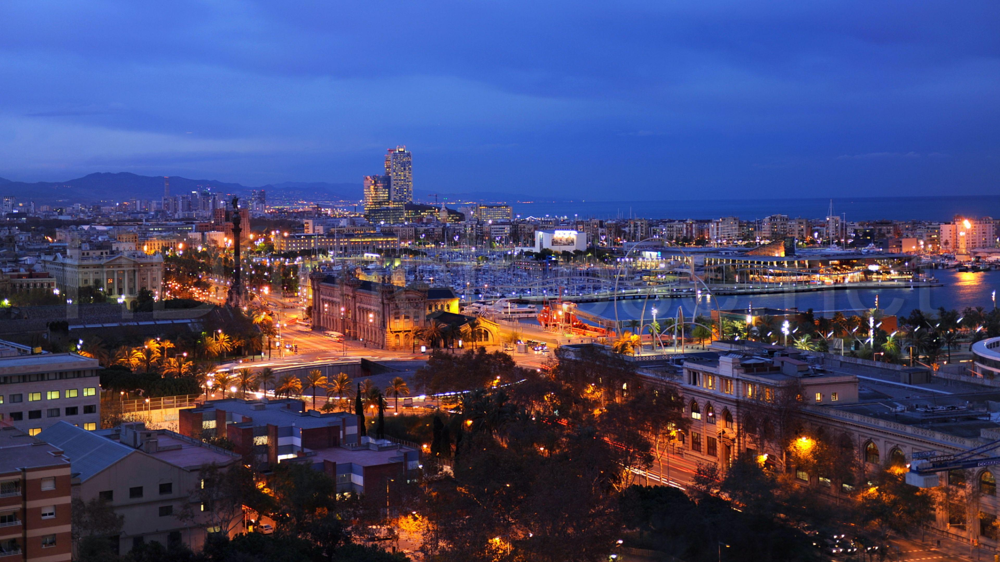
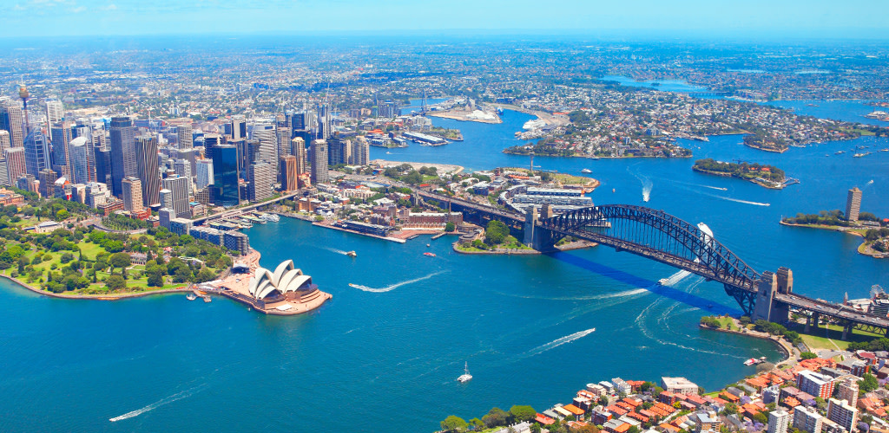
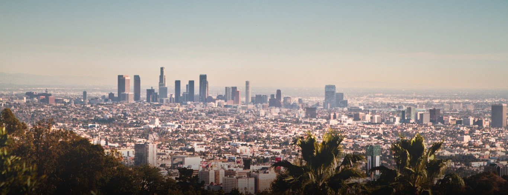

Experienced corporate guy, after 15 years working in big companies, I decided to do a shift in my life... Passioned for Diversity and Innovation. Studying programming in order to understand better this "dev world" and all its wonderful particularities.
|  |
Barcelona - SpainBarcelona (/ˌbɑːrsəˈloʊnə/ BAR-sə-LOH-nə, Catalan: [bəɾsəˈlonə], Spanish: [baɾθeˈlona]) is a city in Spain. It is the capital and largest city of Catalonia, as well as the second most populous municipality of Spain. With a population of 1.6 million within city limits,its urban area extends to numerous neighbouring municipalities within the Province of Barcelona and is home to around 4.8 million people, making it the sixth most populous urban area in the European Union after Paris, London, Madrid, the Ruhr area and Milan. It is the largest metropolis on the Mediterranean Sea, located on the coast between the mouths of the rivers Llobregat and Besòs, and bounded to the west by the Serra de Collserola mountain range, the tallest peak of which is 512 metres (1,680 feet) high. |
|  |
Sydney - AustraliaSydney (/ˈsɪdni/ (About this sound listen)) is the state capital of New South Wales and the most populous city in Australia and Oceania. Located on Australia's east coast, the metropolis surrounds Port Jackson and sprawls about 70 km (43.5 mi) on its periphery towards the Blue Mountains to the west, Hawkesbury to the north, and Macarthur to the south.Sydney is made up of 658 suburbs, 40 local government areas and 15 contiguous regions. Residents of the city are known as "Sydneysiders".[10] As of June 2017, Sydney's estimated population was 5,131,326. |
|  |
Los Angeles - United StatesLos Angeles (US: /lɔːs ˈændʒələs, -ɡə-, -liːz/ (About this sound listen);[18][a] Spanish for "The Angels"; Spanish: [los ˈaŋxeles]; officially: the City of Los Angeles; colloquially: by its initials L.A.) is the second-most populous city in the United States, after New York City. With an estimated population of four million, Los Angeles is the largest and most populous city in the state of California and the cultural, financial, and commercial center of Southern California. |
This page has been coded during the FullStack program @LeWagon